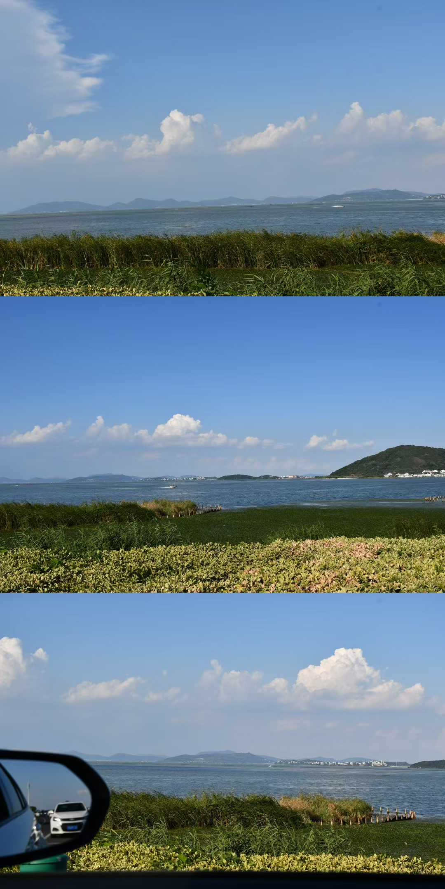

2024.09—2027.06
27 届产品经理候选人 · 上海
把复杂的业务问题，
做成清晰、有效的产品。
具备跨境电商 B 端产品经验，擅长将复杂业务规则转化为可执行方案，并通过数据分析推动商品增长；具备 AI 产品意识，关注 Agent、MCP 等技术在经营提效场景中的落地。
01 · 跨境电商02 · B 端产品03 · AI 提效
MEETLI YING
跨境电商 B 端产品 × 数据驱动 × AI 经营提效
01 / ABOUT
关于我
商业背景训练我理解经营，数据与 AI 让我把判断变成可落地的产品方案。
我关注商品、商家与平台之间的增长关系，也享受从模糊问题里找到结构的过程。
2019.09—2023.06
中南财经政法大学
本科 · 财务管理财务分析 · 管理会计 · 商业建模国家励志奖学金 · 优秀学生干部02 / EXPERIENCE
实习经历
两段产品实习是这份作品集的主线：从商品成长机制，到前台智能表达。
字节跳动 · TikTok Shop
策略产品实习生
负责商家端商品成长产品 Sales Accelerator（SA），围绕“高潜商品识别—经营任务承接—资源激励—爆品孵化”搭建成长链路，推动商品成长为战略重点商品（SKPP），提升优质供给规模与出爆效率。
23万+靶向新品引入
+10.1%广告任务参与率
51.76%高分商品 SKPP GMV
商品成长机制建设
围绕商品准入、经营成长与资源分配，升级价格、履约、信息质量及 CRM 托管任务，提升规则透明度；将广告金收敛至靶向货盘的站内同款新品，并按商品上架后 L30 净 GMV 动态核算，建立“靶向爆品引入—SKPP 转化—站内出爆—补贴 ROI”指标链路。上线后，两项新增任务覆盖商品数分别增长 6.7% / 4.7%，SKPP 商品池日均规模增长 3.1%；商机导流 +5pp，靶向货盘标签点击率达 8.2%，引入 23 万+ 靶向新品。
商家任务链路提效
基于“页面曝光—任务点击—广告创建”漏斗分析，定位任务入口分散、操作链路较深等问题；整合短视频与广告任务为商品生命周期任务台，统一成长阶段、达标门槛、任务进度及奖励展示，以广告创建率、短视频挂品率为过程指标，指向最终出爆率。上线一周，爆品孵化任务总体参与率 +4.32%，广告任务参与率较改版前 +10.1%。
AI 经营助手设计
基于商品分层发现，11–13 分高竞争力商品贡献 51.76% 的 SKPP GMV，但 SA 访问至单任务点击转化率仅 28.2%；据此设计基于 MCP/API 编排的商家经营助手，将商品诊断、任务规划与推荐参数整合为单品多任务方案，支持自然语言调整、参数预填及多任务一键提交。
SHEIN
产品实习生
为提升首页商卡点击率，深度参与商卡智能 UI 升级，从主图、标题、标签等维度缩短用户决策路径并引导转化。
+0.57%AIGC 图片 CTR
+1.85%低库存标签支付转化
+0.31%评论短语标签 CTR
AIGC 智能推图
针对商卡固定主图、优质副图缺乏曝光机会等问题，参与设计存量图片优选，调用 Qwen 模型完成白底/模特图分类与不合格图片过滤，并结合点击率、加车率进行图片赛马，CTR +0.44%；基于 AIGC 生成高质量模特图/场景图，在珠宝品类实验中实现 CTR +0.57%。
智能动态标签升级
设计商品低库存、近期热销标签；低库存标签引入相对动销机制，通过可售天数展现库存消耗速度，支付转化率提升 +1.85%；定义同末级品类近 14 天销量 Top 10% 为近期热销阈值，推广至非 US 区域，US 站支付转化率提升 +0.32%。
用户评论展示
通过品类梳理评论关键词、算法清洗优质评论，并基于 LLM 进行评论归一化，按品类优先级与出现频次排序，优先透出高价值评论短语标签，实现 CTR +0.31%。
EARLIER PATH
完整实践路径
运营、商业分析与策略经历，让我能同时看见用户动作和业务结果。
字节跳动 · TikTok Shop
策略运营实习生
商家分层建设
协助推动头部品牌增长项目，建立基于竞对头商、GRKA 的 Top Brand 商家体系，落地以“TTS 控制率”为核心的评估体系，为精细化运营和资源差异化配置提供支持；Top Brand 整体控比从 0.51 提升至 0.62。
商家成长策略
参与 JBP 头部商家增长计划，将合同填写由人工逐条编辑升级为结构化字段替换、条件条款管控与商家等级自动识别的自动化工作流，处理时效缩短至分钟级；搭建高潜商家多维数据看板，数据验证参与商户 DAGMV 增长 37%，平台补贴效率提升 4pp。
商家治理看板搭建与应用
搭建并落地商家治理看板，在治理排查中识别 1000+ 家不符合规范的商家，通过分层播报、重点问题答疑及 AM 联动推进整改，最终实际下线控制在 100+，挽回近 90% 潜在 GMV 损失。
字节跳动
商业分析实习生
经营监控与异动分析
负责出海游戏广告业务经营分析，建立涵盖团队、客户、版位、游戏类型等多维度的业绩追踪体系；监测消耗、活客数、ARPA、YoY 等指标，快速定位异动原因并输出专项分析结论。
营销预测建模
构建游戏广告营收预测模型，对客户结构、游戏类型及投放阶段进行多层级拆解，结合行业趋势与历史数据，经过三次迭代将季度预测误差控制在 5% 以内，为 Q4 目标拆解与资源分配提供依据。
Shopee
策略实习生
新品策略
基于过往新品销售数据及品类 Top 情况，识别服装品类新品 ADO 达峰滞后与流量策略匹配不精准的问题；将线下橱窗的陈列逻辑迁移至线上，搭建基于流行趋势的新品聚合场景。实验组新品 ADO 达峰提前至 M+2，峰值 ADO 较优化前提升 15%。
动态追踪
运用高级函数整合多国源数据，实现 KPI 自动化追踪；结合客户经理反馈归因卖家业绩波动，为精细化运营提供支持。
上海汇知意德企业管理咨询有限公司
战略咨询实习生
NEV 上市战略
深度参与头部车企新能源汽车上市前战略项目，覆盖项目启动、研究设计、数据分析与报告撰写，为核心定价和市场进入策略提供依据。
研究与定价
执行焦点小组、一对一深访及 500+ 定量问卷，运用 SPSS 完成数据清洗与交叉分析，识别目标用户画像和未满足需求；应用 PSM 模型测算最优定价区间。
海外市场研究
分析沙特市场主流车型销量、定价与消费者偏好，对比中国 NEV 品牌出海表现，协助交付专项研究报告和市场进入建议。
国金证券
IPO 项目实习生
IPO 申报支持
参与北交所 IPO 项目，核验 3 年财务数据，完成收入、成本、费用科目穿行测试；负责 100+ 份银行函证全流程核对，覆盖率 100%、零差错。
行业与财务分析
收集行业政策及竞品财务、业务数据，输出行业竞争格局分析；使用 Excel 数据透视表与 VLOOKUP 处理财务数据并完成多维交叉分析。
普华永道中天会计师事务所
审计实习生
审计项目
协助美团审计项目，核验银行账户、固定资产与供应商清单，完成 50+ 科目抽样测试；执行银行询证与穿行测试，识别 2 个潜在风险点并跟进整改。
报告支持
协助编制财务报表附注与审计报告，完成理财产品收益率测算等专项工作。
03 / PROJECTS
校园项目
把研究方法与 AI 工具，放进真实的信息服务场景。
01
2025.03—2025.05
复旦大学图书馆智能问答助手「旦小图」
产品核心成员 · 多 Agent 协同设计基于 Coze 搭建意图识别、问题改写、知识检索、答案生成与未解决问题收集的一体化工作流；打通飞书多维表格 API，形成学生端录入、教师端回复、答案回流知识库的双端闭环。复杂问题回答准确率达 96.8%，知识同步耗时从 24h 降至 5min。
02
2025.03—至今
基于 LLM 的考古元数据抽取与知识图谱建设
课题核心成员 · 本体建模 / Prompt 设计基于 CIDOC CRM 修订核心元数据与类属性逻辑，通过字段约束、Few-shot Prompt 和标准 JSON 输出，将非结构化考古报告转化为可入库、可质检的结构化数据。
03
2024.07—2024.08
香港大学 · 访问交换生
AI 与 NLP · 数字人文 · 数据表达围绕生成式 AI、可信与伦理、系统思维和专业英文展示开展研讨与实践，将课程框架沉淀为可复用的“观点—证据—反例—结论”表达模板。
04 / CAPABILITIES
能力工具箱
策略、数据和技术不被分开使用——它们共同服务于更好的产品判断。
AI 与智能体
Codex、Claude Code、ChatGPT；Coze Agent、工作流搭建与 MCP/API 能力编排。
产品与数据
Figma、SQL、Excel、FineBI、Think-cell；使用 Python/R 进行数据分析与建模。
语言与证书
IELTS 7、CET-6 578；计算机二级、初级会计师、FCP-FineBI。
05 / LIFE
途中所见
一条照片走廊。让你在滑动里，遇见我路上收藏的光。

继续向前→
横向滑动浏览 · 鼠标滚轮与方向键也可推进